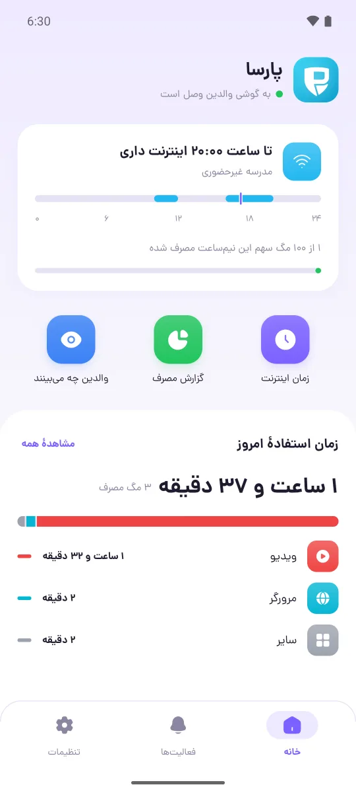
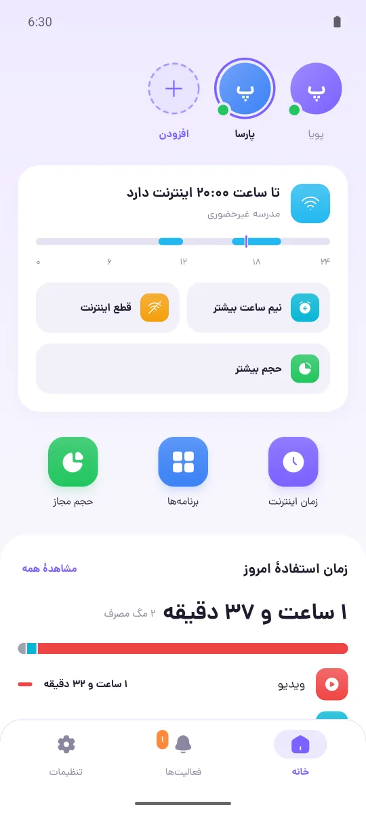
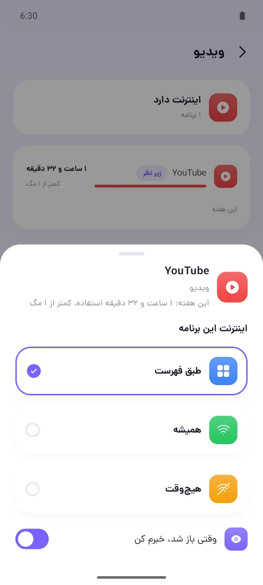
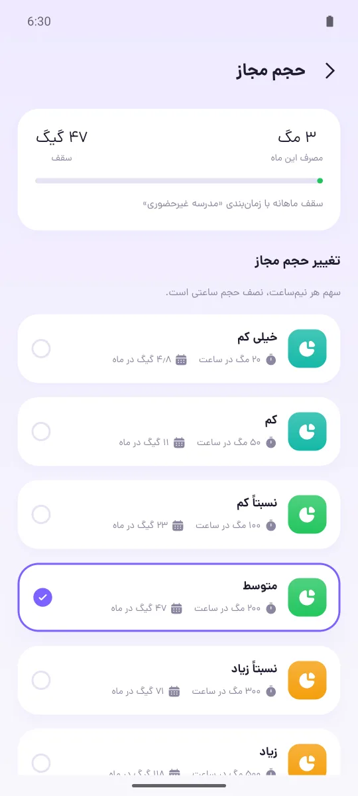
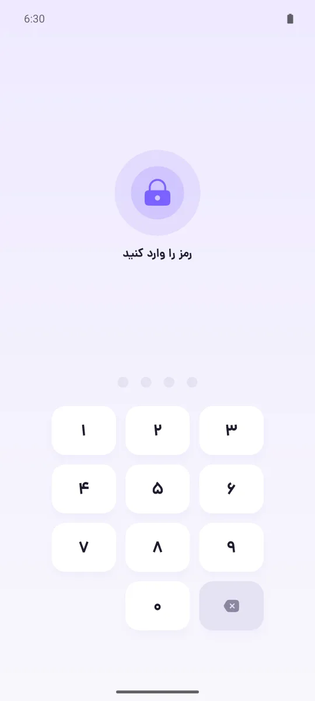

پوکورا به زندگی دیجیتال فرزندان سر و سامان میدهد
دانلود رایگان

والدین تنظیم میکنند و فرزند از همهچیز باخبر است
با پوکورا در مصرف اینترنت صرفهجویی میشود


یک الگو انتخاب کنید؛ هر وقت خواستید تغییرش دهید
از نصب تا اولین گزارش، برنامه قدمبهقدم راهنمایی میکند

پیش از نصب، جواب این پرسشها را بدانید
فقط روی موبایلهای خود خانواده. پوکورا سرور ندارد و حساب کاربری نمیخواهد. دو موبایل فقط از طریق وایفای خانه و بهصورت رمزنگاریشده با هم ارتباط برقرار میکنند و هیچ اطلاعاتی به اینترنت فرستاده نمیشود.
پیامها، عکسها، چیزهایی که فرزند مینویسد و سایتهایی که باز میکند. پوکورا فقط نشان میدهد کدام برنامه چقدر استفاده شده و چقدر حجم مصرف کرده است. فرزند هم در برنامهٔ خودش میبیند والدین دقیقاً چه چیزهایی را میبینند.
نه. پوکورا فیلتر را دور نمیزند و اینترنت را از جای دیگری عبور نمیدهد. از VPN اندروید فقط برای این استفاده میکند که اینترنت برنامههایی را که الان نباید وصل باشند قطع کند. اگر فرزند فیلترشکن نصب کند، به والدین خبر داده میشود.
آخرین وضعیتی که دو موبایل با هم رد و بدل کردهاند، همراه با ساعتش. موبایل فرزند قوانین را بدون والدین هم اجرا میکند و گزارش ۷ روز اخیر را نگه میدارد. برای تغییر قوانین هم باید هر دو موبایل به یک وایفای وصل باشند.
بله، ولی والدین باخبر میشوند. خاموش کردن پوکورا یا VPN، نصب فیلترشکن و غیرفعال کردن سرپرست دستگاه همه گزارش میشوند. این هم فرصتی برای گفتوگو با فرزند است.
بله. کافی است یکی از موبایلها هاتاسپات را روشن کند و موبایل دیگر به آن وصل شود.
بله. هر دو برنامه را روی همان موبایل نصب کنید و در پوکورا والدین «پوکورا فرزند روی همین گوشی است؟» را بزنید تا بدون اسکن، با یک لمس وصل شوند. پوکورا والدین هر بار رمز میخواهد، پس فرزند نمیتواند تنظیمات را تغییر دهد. فقط در نظر داشته باشید که در زمانهای بدون اینترنت، این محدودیت برای خود والدین هم روی همان موبایل اعمال میشود.
نه. پوکورا رایگان و متنباز است، تبلیغ ندارد و ثبتنام نمیخواهد. کدش در گیتهاب برای همه باز است.
فعلاً نه. هر دو موبایل، هم موبایل والدین و هم موبایل فرزند، باید اندروید ۹ یا بالاتر باشند.
هر برنامه روی یک موبایل نصب میشود